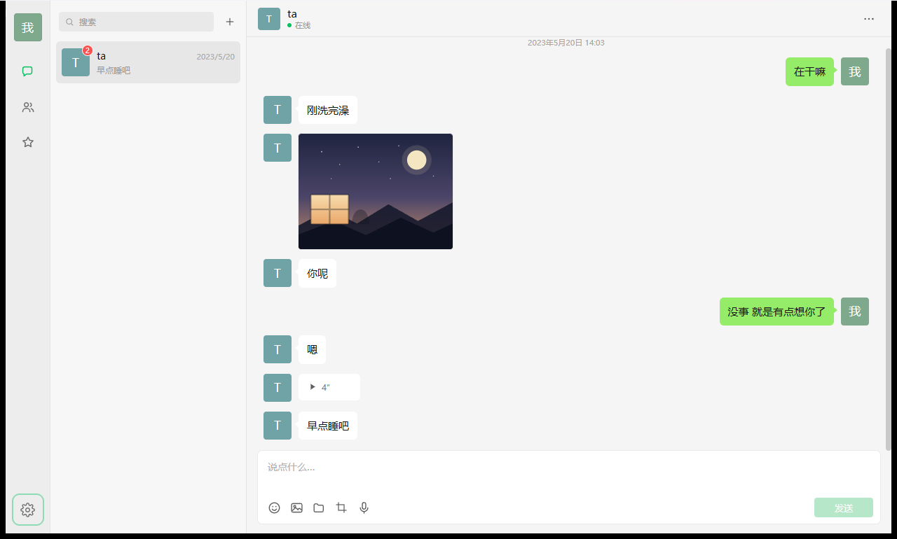

把一段关系，
做成一个还愿意陪你说说话的人。
导入你和 ta 的聊天记录，生成一份只属于你们的人格卡，用你自己的模型 API，以 ta 的口吻聊聊天。 本地优先，没有服务器，所有数据只在这台电脑上。
下载 Windows 内测版 查看源码
真实聊天记录
支持 WeChatMsg / 留痕 / QQ 导出，自动去重、体检、切 holdout。
人格卡
句长、语气词、口头禅、事实、参考对话；可逐条审阅、回滚。
情绪与记忆
四轴状态、Arc 场次、记忆检索、事实锁；不是每轮重新扮演。
你自己的模型
DeepSeek / OpenAI / 通义等 7 家预设；Key 只存本机加密数据库。
像微信
双方头像、时间分隔、图片/语音、已读不回、分段、撤回。
安全与备份
SQLCipher、启动 PIN、加密备份、一键销毁。
隐私与 AI 披露
常在没有服务器，不上传聊天记录、头像或 API Key。只有你配置的模型 Base URL 会收到当前对话上下文。 所有回复由 AI 模拟，不是真人，也不代表聊天记录中的对方本人。